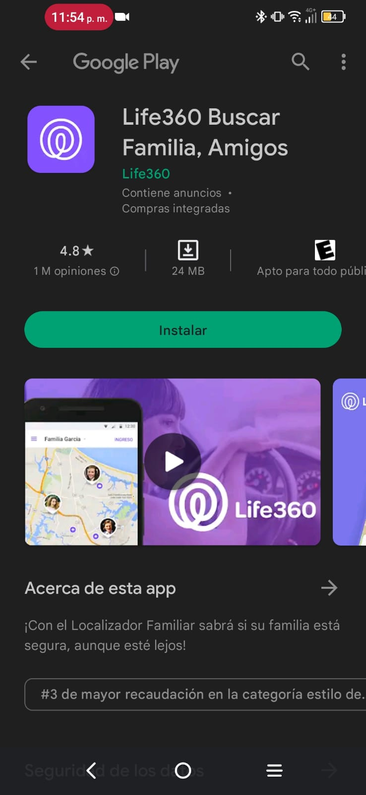
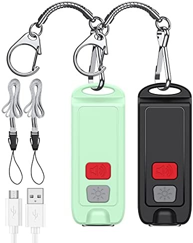

Life360 Buscar Familia, Amigos

El Localizador de Familia de Life360 es el servicio de localización para tu familia más preciso y poderoso, y su más reciente actualización incorpora nuevas características tales como los Círculos Life360 y los Lugares Life360. Gracias a la más moderna tecnología GPS, la aplicación te permitirá:
El Localizador de Familia de Life360 es el servicio de localización para tu familia más preciso y poderoso, y su más reciente actualización incorpora nuevas características tales como los Círculos Life360 y los Lugares Life360. Gracias a la más moderna tecnología GPS, la aplicación te permitirá:
- Ver la ubicación de los miembros de tu familia en un mapa accesible solo por invitación
- Elegir cuándo compartir tu ubicación con cada Círculo
- Chatear de forma individual o con todos los integrantes de un Círculo Life360
Alarma Defensa personal AMIR Mujer 130dB Emergencia Llavero

Alarma de emergencia de seguridad de 130 dB: el llavero de alarma personal lo protege de la situación de emergencia y el sonido puede durar 35 minutos; simplemente jala el pin y un sonido fuerte de 130db para llamar la atención y hacerte escuchar Fuente de alimentación USB: puerto de carga TYPE-C; Esta sirena de alarma personal puede usar el cable de datos USB para cargar directamente. Cuando la carga es luz roja; cuando está completamente cargada, es luz verde.
Alarma de emergencia de seguridad de 130 dB: el llavero de alarma personal lo protege de la situación de emergencia y el sonido puede durar 35 minutos; simplemente jala el pin y un sonido fuerte de 130db para llamar la atención y hacerte escuchar Fuente de alimentación USB: puerto de carga TYPE-C; Esta sirena de alarma personal puede usar el cable de datos USB para cargar directamente. Cuando la carga es luz roja; cuando está completamente cargada, es luz verde.